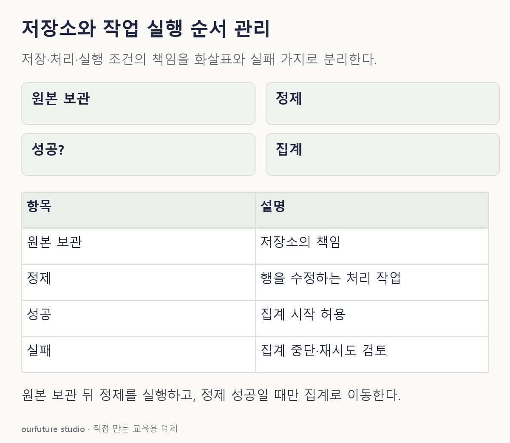

조건을 바꾸며 확인하기
실제 Hadoop/Oozie를 실행하지 않는 역할 판단이다. Oozie는 과거 사례이며 신규 도입 권장이 아니다.
설명 그림과 비교하기
아래 그림과 표는 고정된 설명 예제입니다. 기본·변형 중 어떤 조건인지 캡션을 읽고, 바꾼 입력의 결과는 계산 칸에서 확인하세요.

같은 문제를 직접 골라 보기
정제가 성공한 뒤에만 매출 집계를 실행해야 한다.
조건을 더 바꾸면?
조건을 “원본 주문 파일을 여러 장비에 나누어 보관”으로 바꾸면 필요한 책임은?
변형 풀이 확인
분산 저장의 책임이다.
질문이 실행 순서에서 자료 보관으로 바뀌었다. 같은 파이프라인 안에서도 요구하는 책임에 따라 답이 달라진다.
보관할 곳을 묻는지, 다음 실행 조건을 묻는지 먼저 읽는다.